Scoring
M2 D3S/EGR 2026-2027
1 Outline
1.1 Outline
Farm holding case study - solutions
The Logistic Regression model
Estimation
2 Farm holding case study
2.1 Farm holding case study
2.1.1 Financial problems of farm holdings
The article from Desbois (2008) (available here together with a sample data set) shows a complete case study around the detection of financial risks applicable to farm holdings.
Among others, Linear Discriminant Analysis and Logistic Regression (plus stepwise variable selection procedure) are used.
ROC curves are then provided to compare the two methods.
The original data set uses a format specific to the SPSS software, but is readable from R using the foreign package.
The case study by D. Desbois will be partly reproduced today and in the next lessons to quickly apply scoring techniques.
2.2 Farm holding case study
Loading Farm holding data and first glimpse at it:
Code
# package used to import spss file
library(foreign)
don_desbois <- read.spss("../data/presentation_data/Agriculture Farm Lending/desbois.sav", to.data.frame = TRUE) %>% as_tibble()
glimpse(don_desbois)Rows: 1,260
Columns: 30
$ CNTY <fct> Eure, Eure, Eure, Eure, Eure, Eure, Eure, Eure, Eure, Eure, Eu…
$ DIFF <fct> healthy, healthy, healthy, healthy, healthy, healthy, healthy,…
$ STATUS <fct> Entreprise individuelle, Entreprise individuelle, Entreprise i…
$ HECTARE <dbl> 166, 101, 138, 166, 137, 107, 100, 69, 176, 177, 108, 123, 87,…
$ ToF <fct> cereals, cereals, dairy farm, cereals, mixed livestock, cereal…
$ OWNLAND <fct> yes, no, yes, yes, yes, yes, no, yes, yes, yes, yes, yes, yes,…
$ AGE <dbl> 35, 35, 42, 50, 33, 45, 34, 30, 44, 39, 40, 40, 40, 52, 49, 44…
$ HARVEST <fct> 1988, 1988, 1988, 1988, 1988, 1988, 1988, 1988, 1988, 1988, 19…
$ r1 <dbl> 0.449, 0.450, 0.332, 0.363, 0.440, 0.306, 0.717, 0.566, 0.145,…
$ r2 <dbl> 0.622, 0.617, 0.819, 0.733, 0.650, 0.755, 0.320, 0.465, 0.881,…
$ r3 <dbl> 0.25500, 0.24110, 0.55680, 0.35960, 0.31420, 0.26350, 0.16280,…
$ r4 <dbl> 0.11450, 0.10840, 0.18510, 0.13050, 0.13820, 0.08055, 0.11680,…
$ r5 <dbl> 0.334, 0.341, 0.147, 0.232, 0.302, 0.225, 0.601, 0.499, 0.115,…
$ r6 <dbl> 0.785, 0.518, 0.700, 0.773, 0.846, 0.709, 0.894, 0.863, 0.439,…
$ r7 <dbl> 0.585, 0.393, 0.310, 0.495, 0.580, 0.523, 0.748, 0.761, 0.348,…
$ r8 <dbl> 0.20020, 0.12500, 0.38950, 0.27790, 0.26580, 0.18700, 0.14550,…
$ r11 <dbl> 0.6628, 0.7098, 0.4142, 0.4661, 0.7715, 0.8178, 0.6598, 0.6619…
$ r12 <dbl> 1.3698, 1.2534, 0.6370, 1.0698, 1.4752, 1.4682, 1.1018, 1.2360…
$ r14 <dbl> 0.23200, 0.14970, 0.48470, 0.37350, 0.25630, 0.18610, 0.18070,…
$ r17 <dbl> 0.0884, 0.0671, 0.0445, 0.0621, 0.0489, 0.0243, 0.0352, 0.0879…
$ r18 <dbl> 0.0694, 0.0348, 0.0311, 0.0480, 0.0414, 0.0173, 0.0315, 0.0758…
$ r19 <dbl> 0.1660, 0.1360, 0.1030, 0.1080, 0.1270, 0.0652, 0.1290, 0.2400…
$ r21 <dbl> 0.1340, 0.0802, 0.0890, 0.0851, 0.0838, 0.0390, 0.0784, 0.1630…
$ r22 <dbl> 0.3219, 0.3133, 0.2945, 0.1909, 0.2567, 0.1472, 0.3211, 0.5170…
$ r24 <dbl> 0.295, 0.365, 0.166, 0.265, 0.257, 0.191, 0.322, 0.305, 0.180,…
$ r28 <dbl> 0.475, 0.434, 0.350, 0.475, 0.475, 0.443, 0.401, 0.464, 0.475,…
$ r30 <dbl> 0.35000, 0.29780, 0.24680, 0.37590, 0.36690, 0.37590, 0.27240,…
$ r32 <dbl> 0.4313, 0.3989, 0.3187, 0.4313, 0.4313, 0.4257, 0.3697, 0.3886…
$ r36 <dbl> 0.886, 0.351, 1.300, 1.385, 0.886, 1.316, 0.441, 0.761, 2.147,…
$ r37 <dbl> 0.572, 0.867, 0.475, 0.470, 0.520, 0.431, 0.803, 0.656, 0.359,…2.3 Farm holding case study
Tasks from case study Part 1:
- Load and explore the Desbois dataset (EDA at home)
- Understand the 37 financial ratios used as predictors (EDA at home)
- Perform PCA on financial ratios and discover that even this unsupervised method separates defaulting farms
- Use the first principal component as a naive scoring function
- Evaluate it with a ROC curve
2.4 Farm holding case study
Replacing for convenience DIFF target by factor Y with O (healthy) or 1 (failing):
Code
don_desbois <- don_desbois %>%
mutate(Y = as.factor(if_else(DIFF=='healthy', 0, 1)), DIFF = NULL,
.before = everything())We give in the following slides the definitions of financial ratio \(r_1,...,r_{37}\), that we will use today, as found in the article.
They might give you inspiration to create new predictors/features for the project to come.
2.5 Farm holding case study
2.5.1 Capitalization ratios
- r1 total debt / total assets;
- r2 stockholders’ equity / invested capital;
- r3 short term debt / total debt;
- r4 short term debt / total assets;
- r5 long and medium term debt / total assets;
2.6 Farm holding case study
2.6.1 Weight of the debt ratios
- r6 total debt / gross product;
- r7 long and medium term debt / gross product;
- r8 short term debt / gross product;
2.7 Farm holding case study
2.7.1 Liquidity ratios
- r11 working capital / gross product;
- r12 working capital / (real inputs - financial expenses);
- r14 short term debt / circulating assets;
2.8 Farm holding case study
2.8.1 Debt servicing ratios
- r17 financial expenses / total debt;
- r18 financial expenses / gross product;
- r19 (financial expenses + refunding of long and medium term capital) / gross product;
- r21 financial expenses / EBITDA;
- r22 (financial expenses + refunding of long and medium term capital) / EBITDA;
2.9 Farm holding case study
2.9.1 Capital profitability ratio
- r24 EBITDA / total assets;
2.10 Farm holding case study
2.10.1 Earnings ratios
- r28 EBITDA / gross product;
- r30 available income / gross product;
- r32 (EBITDA - financial expenses) / gross product;
2.11 Farm holding case study
2.11.1 Productive activity ratios
- r36 immobilized assets / gross product;
- r37 gross product / total assets.
2.12 Farm holding case study
2.12.1 Your turn to play
Using the data set at hand, try to retrieve some findings of the Farm holding case study.
You might need R packages FactoMineR, ROCR and MASS::lda function to perform the tasks (“YOUR CODE HERE”) described in the following slides.
Each time I show an example of what is expected.
I suggest that you start using Quarto (setup here) to code and track/publish your results. It will be requested for your projects (it is very similar to RMarkdown). It integrates perfectly with RStudio.
2.13 Farm holding case study
2.13.1 Principal Component Analysis (PCA) of financial ratios
First perform PCA on financial ratios (use for example package FactoMineR), then display correlations between ratios and the two first principal components :
Code
########## YOUR CODE HERE #####################Code
# More details here http://factominer.free.fr/factomethods/principal-components-analysis.html
res.pca = FactoMineR::PCA(don_desbois,
scale.unit = TRUE,
quanti.sup = c(4, 7), # HECTARE / AGE excluded from Farm holding analysis
quali.sup = c(1, 2, 3, 5, 6, 8),
ncp = 5,
graph=FALSE)
plot(res.pca, choix = "var")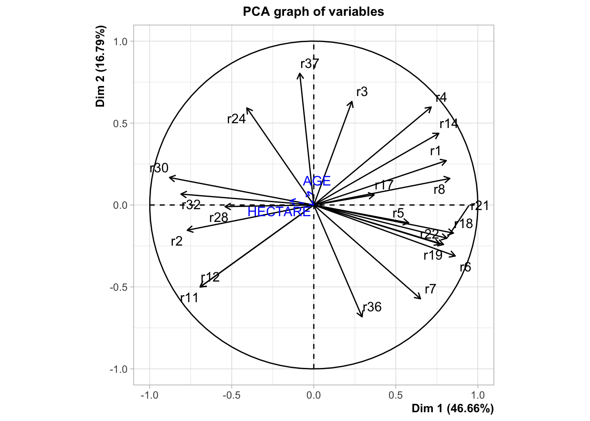
Code
# FactoMineR::dimdesc(res.pca, axes=c(1,2))2.14 Farm holding case study
2.14.1 Principal Component Analysis (PCA) of financial ratios
Code
# More details here http://factominer.free.fr/factomethods/principal-components-analysis.html
res.pca = FactoMineR::PCA(don_desbois,
scale.unit = TRUE,
quanti.sup = c(4, 7), # HECTARE / AGE excluded from Farm holding analysis
quali.sup = c(1, 2, 3, 5, 6, 8),
ncp = 5,
graph=FALSE)
plot(res.pca, choix = "var")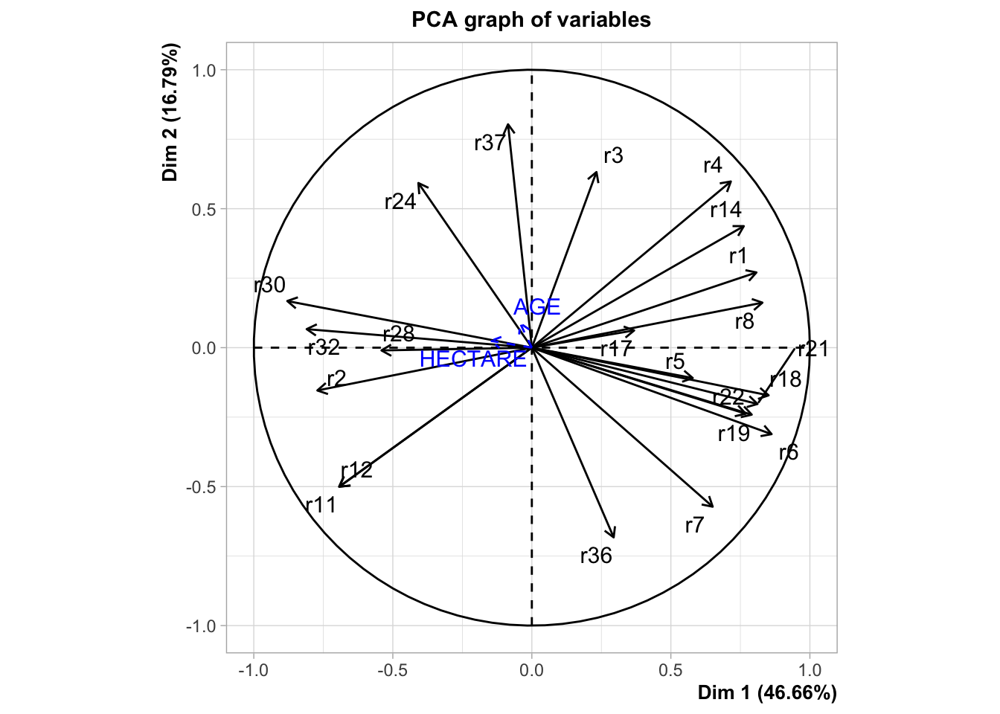
2.15 Farm holding case study
2.15.1 To be compared with article Figure 1
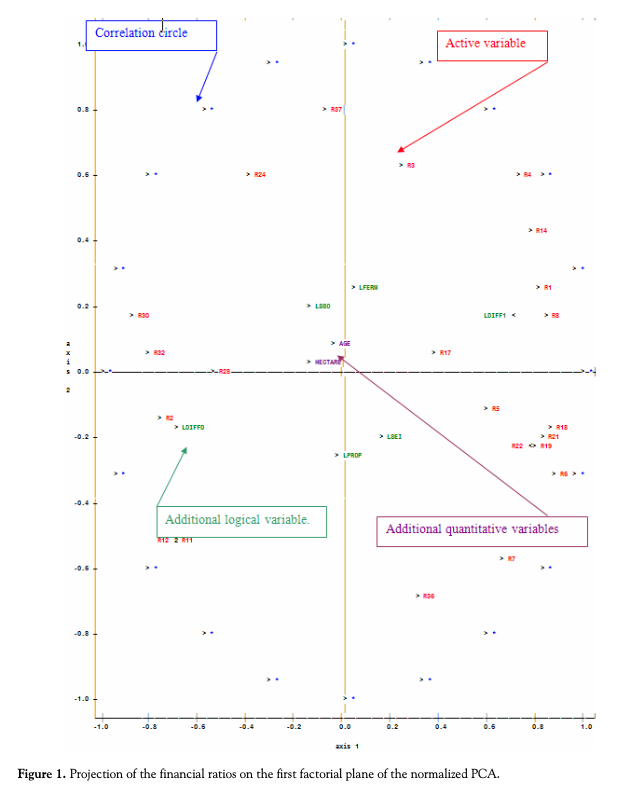
2.16 Farm holding case study
Code
########## YOUR CODE HERE #####################Following D. Desbois path, visualize the farm holdings in data set as a bivariate plot on the first two components of PCA (based on financial ratios), use variable Y (0=”healthy”; 1=”failing”) to colour your observations:
Code
# Similar to D. Desbois Fig 2.
# Plot of the farm holdings in the first factorial plane of the normalized PCA based on financial ratios
# with illustrative variable Y (0=”healthy”; 1=”failing”)
FactoMineR::plot.PCA(res.pca, axes=c(1, 2), choix="ind", habillage=1, invisible = c("quali"))
2.17 Farm holding case study
It strikes D. Desbois that the PCA (even if not a discriminative/scoring procedure), seems to do a rather good job identifying defaulting farms on the training set.
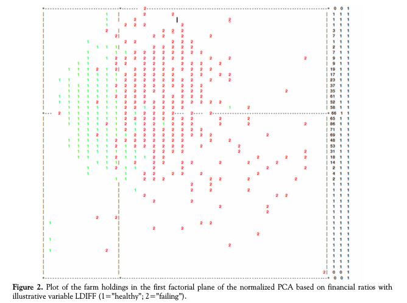
Caveat: PCA is unsupervised (operates on X without knowledge of Y), so the first PC will not generally predict Y well.
2.18 Farm holding case study
Code
# Similar to D. Desbois Fig 2.
# Plot of the farm holdings in the first factorial plane of the normalized PCA based on financial ratios
# with illustrative variable Y (0=”healthy”; 1=”failing”)
FactoMineR::plot.PCA(res.pca, axes=c(1, 2), choix="ind", habillage=1, invisible = c("quali"))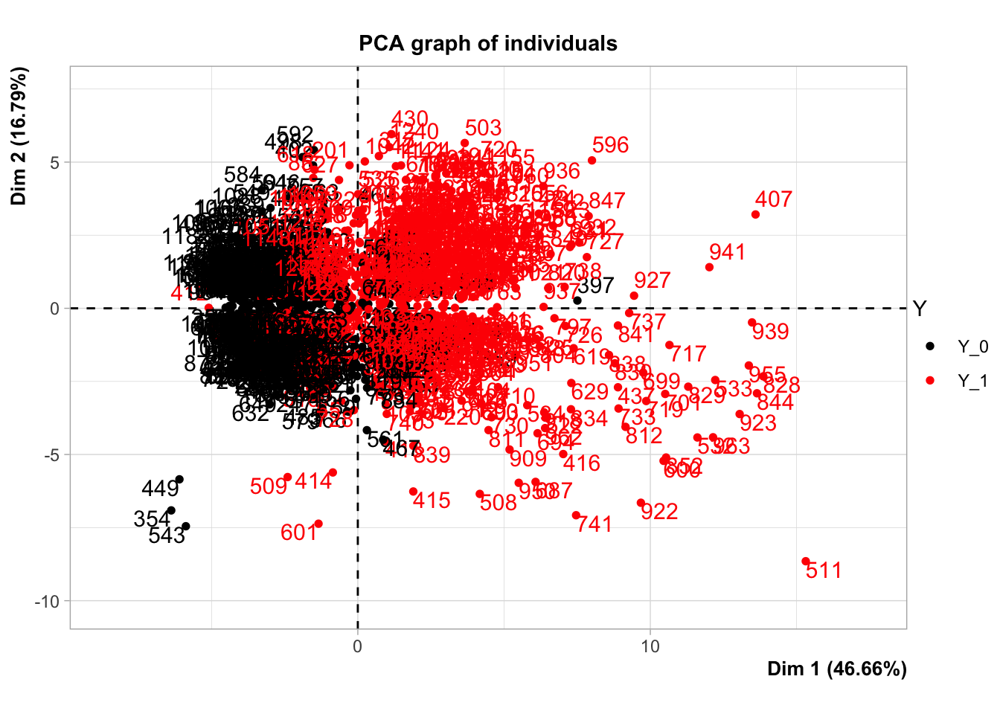
2.19 Farm holding case study
Looking at the preceding plot D. Desbois concludes that a simple classifier can be devised using the first PCA coordinate (setting a threshold at \(PC_1 > 0.02\)):
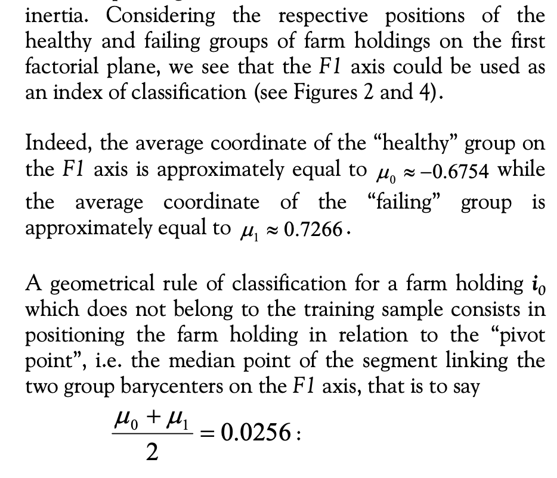
2.20 Farm holding case study
As suggested by D. Desbois, extract the first principal component (some help here), and use it as a Scoring function.
Today it will allow us to use a first Scoring function without introducing the Logistic Regression that you have not yet studied in class.
Code
########## YOUR CODE HERE #####################Code
# https://stats.stackexchange.com/questions/460787/pcr-after-pca-with-mixed-data-how-to-extract-export-the-pcs-as-new-variables-i
# https://stats.stackexchange.com/questions/494866/how-to-explain-the-numerical-discrepancy-between-factominerpca-and-the-svd
# https://stats.stackexchange.com/questions/134282/relationship-between-svd-and-pca-how-to-use-svd-to-perform-pca
# Extracting first five Principal components from FactomineR object
# Using FactomineR 'notation' (U,sv,V)
# (X nxp matrix of D. Desbois observations (only r1...r37), SVD decomposition X = U %*% diag(vs) %*% t(V),
# where U: unitary matrix of left-singular vectors, vs: singular values, V: unitary matrix of left-singular vectors)
# SVD object from FactomineR res.pca$svd
# Principal components X %*% V = U %*% diag(vs) %*% t(V) %*% V = U %*% diag(vs)
principal_components_1 <- res.pca$svd$U %*% diag(res.pca$svd$vs[1:5])
# Can also be directly extracted from:
principal_components_2 <- res.pca$ind$coord
# Or using PC = X %*% V (where X has been centered and scaled
# base R 'scale' uses a different scaling factor than FactomineR hence sqrt(n / n-1) correction)
X_for_PCA <- don_desbois %>% select(r1:r37) %>% as.matrix()
principal_components_3 <- sqrt(nrow(X_for_PCA) / (nrow(X_for_PCA) - 1)) * scale(X_for_PCA) %*% res.pca$svd$VBelow the score for each observation is the x-axis or first principal component:
Code
naive_score <- bind_cols(don_desbois, as_tibble(principal_components_2))
ggplot(naive_score) +
geom_point(aes(x = Dim.1, y = Dim.2, col = Y)) +
scale_colour_manual(values = c("dodgerblue", "orange"))
2.21 Farm holding case study
We show below how to obtain the first five Principal components (D. Desbois only uses the first two):
Code
# https://stats.stackexchange.com/questions/460787/pcr-after-pca-with-mixed-data-how-to-extract-export-the-pcs-as-new-variables-i
# https://stats.stackexchange.com/questions/494866/how-to-explain-the-numerical-discrepancy-between-factominerpca-and-the-svd
# https://stats.stackexchange.com/questions/134282/relationship-between-svd-and-pca-how-to-use-svd-to-perform-pca
# Extracting first five Principal components from FactomineR object
# Using FactomineR 'notation' (U,sv,V)
# (X nxp matrix of D. Desbois observations (only r1...r37), SVD decomposition X = U %*% diag(vs) %*% t(V),
# where U: unitary matrix of left-singular vectors, vs: singular values, V: unitary matrix of left-singular vectors)
# SVD object from FactomineR res.pca$svd
# Principal components X %*% V = U %*% diag(vs) %*% t(V) %*% V = U %*% diag(vs)
principal_components_1 <- res.pca$svd$U %*% diag(res.pca$svd$vs[1:5])
# Can also be directly extracted from:
principal_components_2 <- res.pca$ind$coord
# Or using PC = X %*% V (where X has been centered and scaled
# base R 'scale' uses a different scaling factor than FactomineR hence sqrt(n / n-1) correction)
X_for_PCA <- don_desbois %>% select(r1:r37) %>% as.matrix()
principal_components_3 <- sqrt(nrow(X_for_PCA) / (nrow(X_for_PCA) - 1)) * scale(X_for_PCA) %*% res.pca$svd$V
# perform svd using base R on scaled matrix
s <- svd(scale(X_for_PCA))
# correct for negative signs
s$v[, c(2, 3, 4, 5)] <- s$v[, c(2, 3, 4, 5)] * -1
V <- s$v[,1:5]
principal_components_4 <- sqrt(nrow(X_for_PCA) / (nrow(X_for_PCA) - 1)) * scale(X_for_PCA) %*% V2.22 Farm holding case study
Below we define the score for each observation \(x\) as the first principal component \(PC_1(x)\) (x-coordinate below, with \(PC_2(x)\) as y-coordinate):
Code
naive_score <- bind_cols(don_desbois, as_tibble(principal_components_2))
ggplot(naive_score) +
geom_point(aes(x = Dim.1, y = Dim.2, col = Y)) +
scale_colour_manual(values = c("dodgerblue", "orange"))
Defaulting farms or observations \(x\) appear in orange, healthy in blue.
2.23 Farm holding case study
Going further than D. Desbois and for illustrative purposes only, use \(PC_1\) as a very naive Scoring function.
Plot below the ROC curve as defined in the Scoring part of the presentation (you can use package ROCR, but a simple for-loop for different cutoff values \(s\) will do the job):
Code
########## YOUR CODE HERE #####################Code
library("ROCR")
# naive score
pred <- prediction(naive_score$Dim.1, naive_score$Y)
perf <- performance(pred, measure = "tpr", x.measure = "fpr")
plot(perf, main="ROC curve", xlab="Specificity",
ylab="Sensitivity", col = "darkorange",
print.cutoffs.at = c(-2.5,-1,0.00,1,5),
cutoff.label.function = function(x) {paste0(" s = ",round(x,2))})
abline(0, 1) #add a 45 degree line
We follow closely the D. Desbois case study, but we will see later in course that ROC curves should usually be evaluated on a hold-out/unseen data set.
2.24 Farm holding case study
ROC curve using ROCR package:
Code
library("ROCR")
# naive score
pred <- prediction(naive_score$Dim.1, naive_score$Y)
perf <- performance(pred, measure = "tpr", x.measure = "fpr")
plot(perf, main="ROC curve", xlab="Specificity",
ylab="Sensitivity", col = "darkorange",
print.cutoffs.at = c(-2.5,-1,0.00,1,5),
cutoff.label.function = function(x) {paste0(" s = ",round(x,2))})
abline(0, 1) #add a 45 degree line
2.25 Farm holding case study
ROC curve from scratch/definition: For a given threshold \(s\) and passing as argument a column of outputs \(Y\) together with a score column we define a function to obtain the False/True Positive Rates (ie \((x(s),y(s))\) coordinates):
Code
roc_curve <- function(s, error_rate){
# error_rate is a tibble containing a column Y of true values and a column of score/probabilities
# let s be a threshold in R
output <- factor(error_rate %>% pull(Y), levels = c(0,1))
# classify using model probabilities (ie the score) and the threshold s
classifier <- error_rate %>%
mutate(classifier = factor(if_else(score>=s, 1, 0), levels = c(0,1))) %>%
pull(classifier)
# build the confusion matrix and ROC curve coordinates for the given s
# (x(s) = false_positive_rate, y(s) = true_positive_rate)
conf_mat <- table(output, classifier)
# classifier
# output 0 1
# 0 TN FP
# 1 FN TP
true_negative <- conf_mat[1,1]
false_positive <- conf_mat[1,2]
false_negative <- conf_mat[2,1]
true_positive <- conf_mat[2,2]
false_positive_rate <- false_positive / (false_positive + true_negative)
true_positive_rate <- true_positive / (false_negative + true_positive) # aka sensitivity
return(tibble(threshold = s, fpr = false_positive_rate, tpr = true_positive_rate))
}2.26 Farm holding case study
We then use this roc_curve function to plot the ROC curve (passing a vector of thresholds \(s\)) for our naive Score:
Code
# Format Score/Target to our ROC curve function expected input
naive_error_rate <- tibble(score=naive_score$Dim.1, Y=naive_score$Y)
# We vary s in [-10, 15] to compute the ROC parametric curve
roc_coordinates <- list()
for (s in seq(-10, 15, 0.25)){
roc_coordinates <- append(roc_coordinates,
list(roc_curve(s, naive_error_rate)))
}
roc_coordinates <- bind_rows(roc_coordinates)
ggplot(roc_coordinates, aes(x=fpr, y = tpr)) + geom_line()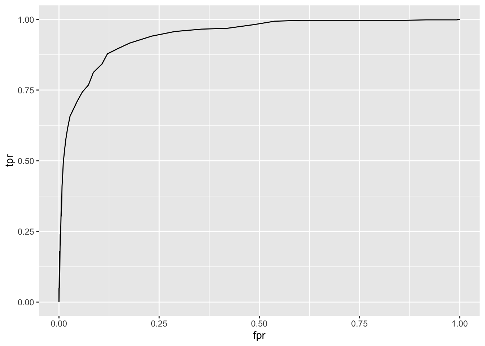
2.27 Farm holding case study
Then compare with a Scoring function obtained with Linear Discriminant Analysis (LDA). For a reminder on LDA see for example Hastie et al. (2009, Chapter 4.3 LDA, p. 103-111).
You can use D. Desbois variables selected in the article by a stepwise procedure (using Wilk’s lambda1). Selected variables are:
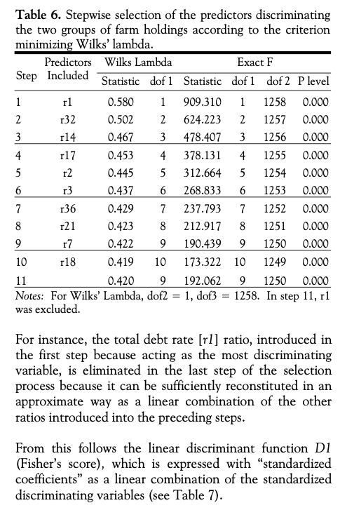
So basically you can fit LDA with r2+r3+r7+r14+r17+r18+r21+r32+r36 as predictors (I use R formula notation to ease your copy-paste).
2.28 Farm holding case study
Fit LDA (MASS::lda) with model specification of your choice. Then display model coefficients:
Code
########## YOUR CODE HERE #####################Using r2+r3+r7+r14+r17+r18+r21+r32+r36, we obtain:
Code
lda_desbois <- MASS::lda(Y~r2+r3+r7+r14+r17+r18+r21+r32+r36, data=don_desbois)
round(lda_desbois$scaling,3) LD1
r2 -2.542
r3 2.398
r7 1.099
r14 0.604
r17 18.702
r18 -6.798
r21 -0.622
r32 -4.163
r36 0.192Similar2 to what D. Desbois obtains:
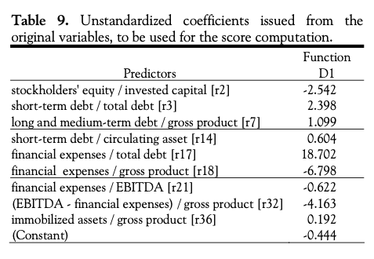
2.29 Farm holding case study
We obtain LDA coefficients:
Code
lda_desbois <- MASS::lda(Y~r2+r3+r7+r14+r17+r18+r21+r32+r36, data=don_desbois)
round(lda_desbois$scaling,3) LD1
r2 -2.542
r3 2.398
r7 1.099
r14 0.604
r17 18.702
r18 -6.798
r21 -0.622
r32 -4.163
r36 0.192And if needed the same constant as in D. Desbois can be obtained:
Code
# https://stats.stackexchange.com/questions/166942/why-are-discriminant-analysis-results-in-r-lda-and-spss-different-constant-t
groupmean<-(lda_desbois$prior%*%lda_desbois$means)
constant<-(groupmean%*%lda_desbois$scaling)
round(-constant,3) LD1
[1,] -0.4442.30 Farm holding case study
Now compare the LDA Scoring function with the naive Score built with first component of PCA using a ROC curve (on training set):
Code
########## YOUR CODE HERE #####################Code
# for ROCR
labels_desbois <- don_desbois$Y
# naive score
predictions_naive_score <- naive_score$Dim.1
naive_score_group <- naive_score %>%
group_by(Y) %>%
summarize(mean_score = mean(Dim.1), n = n())
cutoff_naive <- mean(naive_score_group$mean_score)
pred <- prediction(predictions_naive_score, labels_desbois)
perf <- performance(pred, measure = "tpr", x.measure = "fpr")
plot(perf, main="ROC curve Admissions", xlab="Specificity",
ylab="Sensitivity", col = "darkolivegreen",
print.cutoffs.at = c(cutoff_naive),
cutoff.label.function = function(x) {paste0(" s = ",round(x,2))})
abline(0, 1) #add a 45 degree line
# lda
predictions_lda <- predict(lda_desbois)$x
lda_score_group <- bind_cols(don_desbois, predictions_lda) %>%
group_by(Y) %>%
summarize(mean_score = mean(LD1), n = n())
cutoff_lda <- mean(lda_score_group$mean_score)
pred <- prediction(predictions_lda, labels_desbois)
perf <- performance(pred, measure = "tpr", x.measure = "fpr")
plot(perf, add = TRUE, main="ROC curve Admissions", xlab="Specificity",
ylab="Sensitivity", col = "plum4",
print.cutoffs.at = c(cutoff_lda),
cutoff.label.function = function(x) {paste0(" s = ",round(x,2))})
legend(0.6,0.6,
c('naive - PCA', 'LDA'),
col=c("darkolivegreen", "plum4"),lwd=3)
2.31 Farm holding case study
ROC curve using ROCR package:
Code
# for ROCR
labels_desbois <- don_desbois$Y
# naive score
predictions_naive_score <- naive_score$Dim.1
naive_score_group <- naive_score %>%
group_by(Y) %>%
summarize(mean_score = mean(Dim.1), n = n())
cutoff_naive <- mean(naive_score_group$mean_score)
pred <- prediction(predictions_naive_score, labels_desbois)
perf <- performance(pred, measure = "tpr", x.measure = "fpr")
plot(perf, main="ROC curve Admissions", xlab="Specificity",
ylab="Sensitivity", col = "darkolivegreen",
print.cutoffs.at = c(cutoff_naive),
cutoff.label.function = function(x) {paste0(" s = ",round(x,2))})
abline(0, 1) #add a 45 degree line
# lda
predictions_lda <- predict(lda_desbois)$x
lda_score_group <- bind_cols(don_desbois, predictions_lda) %>%
group_by(Y) %>%
summarize(mean_score = mean(LD1), n = n())
cutoff_lda <- mean(lda_score_group$mean_score)
pred <- prediction(predictions_lda, labels_desbois)
perf <- performance(pred, measure = "tpr", x.measure = "fpr")
plot(perf, add = TRUE, main="ROC curve Admissions", xlab="Specificity",
ylab="Sensitivity", col = "plum4",
print.cutoffs.at = c(cutoff_lda),
cutoff.label.function = function(x) {paste0(" s = ",round(x,2))})
legend(0.6,0.6,
c('naive - PCA', 'LDA'),
col=c("darkolivegreen", "plum4"),lwd=3)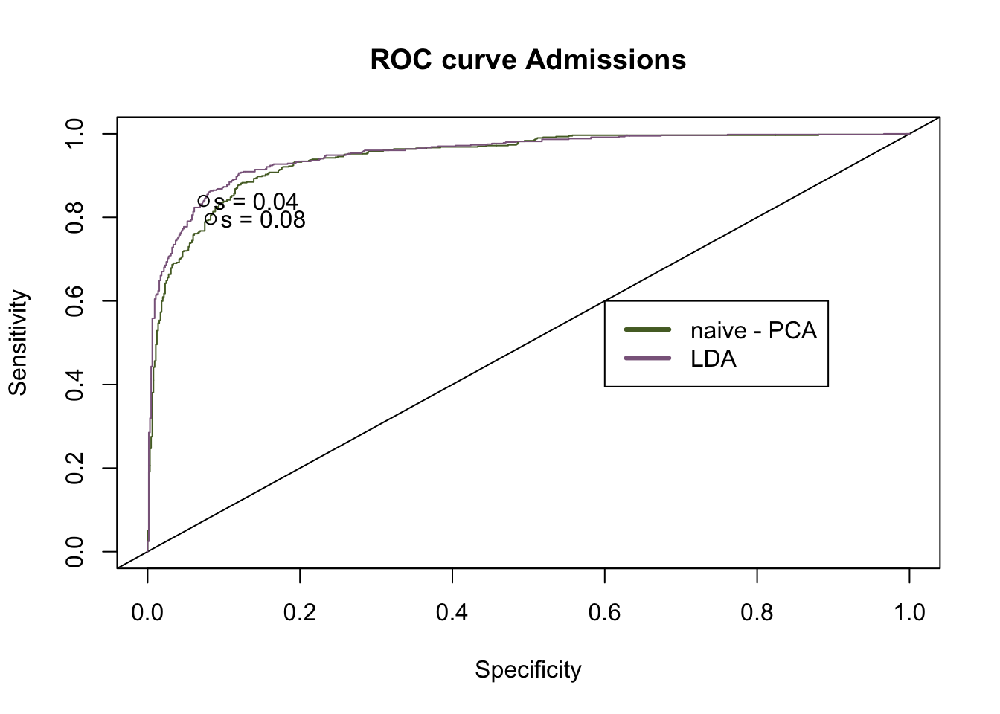
2.32 Farm holding case study
As a very soft and intuitive introduction to logistic regression. First discretize a ratio \(r\) of your choice.
- Compute proportion of defaults among each class. For example using \(0.01\) steps for ratio \(r17\):
Code
########## YOUR CODE HERE #####################Code
class_width <- 0.01
don_desbois_binned <- don_desbois %>%
mutate(r17_bins = cut(r17, breaks = seq(0, 0.2, class_width),
right = FALSE, dig.lab = 4, include.lowest = TRUE),
min = floor(r17 / class_width) * class_width,
max = if_else(r17 == 0 , 1,
# customers with 0$ balance should belong to [0, width) class
# or be excluded
ceiling(r17 / class_width)) * class_width,
max = if_else(min==max, (ceiling(r17 / class_width) + 1) * class_width, max)) %>%
group_by(r17_bins, min, max, Y) %>%
summarize(n=n()) %>%
ungroup() %>%
pivot_wider(names_from = Y, values_from = n) %>%
replace_na(list(`0` = 0, `1` = 0)) %>%
mutate(`Mean(Y)` = round(`1` / (`1` + `0`), 4))
cat(simplermarkdown::md_table(don_desbois_binned %>% select(r17_class=r17_bins, `0`, `1`,`Mean(Y)` )))|r17_class |0 |1 |Mean(Y)|
|-----------|---|--|-------|
|[0,0.01) | 2| 0|0.0000 |
|[0.01,0.02)| 4| 2|0.3333 |
|[0.02,0.03)| 65|14|0.1772 |
|[0.03,0.04)|106|38|0.2639 |
|[0.04,0.05)|112|64|0.3636 |
|[0.05,0.06)|104|77|0.4254 |
|[0.06,0.07)| 88|93|0.5138 |
|[0.07,0.08)| 63|83|0.5685 |
|[0.08,0.09)| 49|66|0.5739 |
|[0.09,0.1) | 27|71|0.7245 |
|[0.1,0.11) | 14|42|0.7500 |
|[0.11,0.12)| 12|42|0.7778 |
|[0.12,0.13)| 7|14|0.6667 |
|[0.19,0.2] | 0| 1|1.0000 |- Then using this table, plot an empirical conditional distribution of default given \(r\) classes:
Code
########## YOUR CODE HERE #####################Code
(default_occurrence <-
ggplot(don_desbois %>% mutate(Y = if_else(Y == "1", 1, 0)), aes(x=r17, y=Y)) +
geom_jitter(alpha=0.2, height=0.1) +
geom_segment(data = don_desbois_binned,
aes(x = min, xend = max, y = `Mean(Y)`, yend = `Mean(Y)`),
color = 'coral',
linewidth=1.25)) +
scale_y_continuous(breaks = c(0, 1))2.33 Farm holding case study
Compute proportion of defaults among each class. For example using \(0.01\) steps for ratio \(r17\):
Code
class_width <- 0.01
don_desbois_binned <- don_desbois %>%
mutate(r17_bins = cut(r17, breaks = seq(0, 0.2, class_width),
right = FALSE, dig.lab = 4, include.lowest = TRUE),
min = floor(r17 / class_width) * class_width,
max = if_else(r17 == 0 , 1,
# customers with 0$ balance should belong to [0, width) class
# or be excluded
ceiling(r17 / class_width)) * class_width,
max = if_else(min==max, (ceiling(r17 / class_width) + 1) * class_width, max)) %>%
group_by(r17_bins, min, max, Y) %>%
summarize(n=n()) %>%
ungroup() %>%
pivot_wider(names_from = Y, values_from = n) %>%
replace_na(list(`0` = 0, `1` = 0)) %>%
mutate(`Mean(Y)` = round(`1` / (`1` + `0`), 4))
cat(simplermarkdown::md_table(don_desbois_binned %>% select(r17_class=r17_bins, `0`, `1`,`Mean(Y)` )))|r17_class |0 |1 |Mean(Y)|
|-----------|---|--|-------|
|[0,0.01) | 2| 0|0.0000 |
|[0.01,0.02)| 4| 2|0.3333 |
|[0.02,0.03)| 65|14|0.1772 |
|[0.03,0.04)|106|38|0.2639 |
|[0.04,0.05)|112|64|0.3636 |
|[0.05,0.06)|104|77|0.4254 |
|[0.06,0.07)| 88|93|0.5138 |
|[0.07,0.08)| 63|83|0.5685 |
|[0.08,0.09)| 49|66|0.5739 |
|[0.09,0.1) | 27|71|0.7245 |
|[0.1,0.11) | 14|42|0.7500 |
|[0.11,0.12)| 12|42|0.7778 |
|[0.12,0.13)| 7|14|0.6667 |
|[0.19,0.2] | 0| 1|1.0000 |2.34 Farm holding case study
Then using this table, plot an empirical conditional distribution of default given \(r\) classes:
Code
(default_occurrence <-
ggplot(don_desbois %>% mutate(Y = if_else(Y == "1", 1, 0)), aes(x=r17, y=Y)) +
geom_jitter(alpha=0.2, height=0.1) +
geom_segment(data = don_desbois_binned,
aes(x = min, xend = max, y = `Mean(Y)`, yend = `Mean(Y)`),
color = 'coral',
linewidth=1.25)) +
scale_y_continuous(breaks = c(0, 1))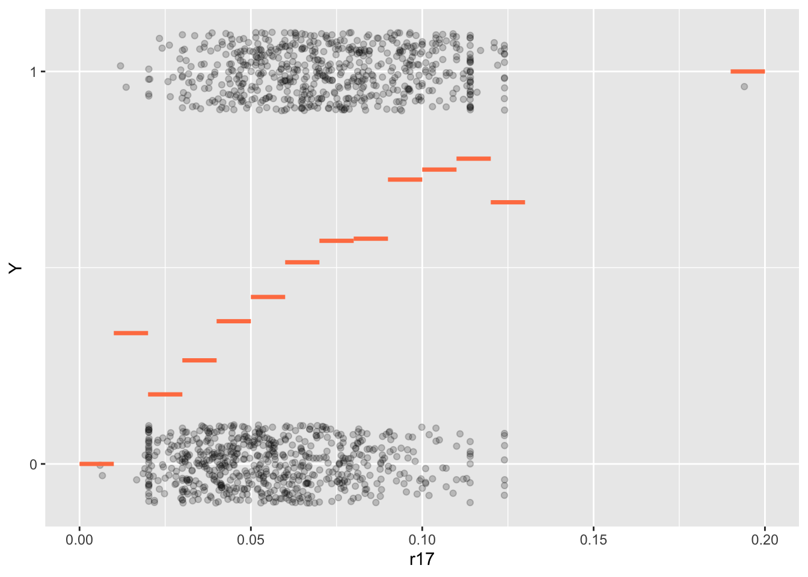
2.35 Farm holding case study
Code
(default_occurrence <-
ggplot(don_desbois %>% mutate(Y = if_else(Y == "1", 1, 0)), aes(x=r17, y=Y)) +
geom_jitter(alpha=0.2, height=0.1) +
geom_smooth(method = "glm",
formula = y ~ x,
method.args = list(family = "binomial"),
se = FALSE,
col = "dodgerblue",
linetype = "dotted") +
geom_segment(data = don_desbois_binned,
aes(x = min, xend = max, y = `Mean(Y)`, yend = `Mean(Y)`),
color = 'coral',
linewidth=1.25)) +
scale_y_continuous(breaks = c(0, 1))We notice that the mean default occurrence with respect to \(r_{17}\) classes follows a kind of “S”-shaped curve or sigmoid function. Note that the shape depends on classes width and might change. We “fitted” (blue-dotted) \(\sigma: x \to\sigma(x)=\frac{e^{x}} { 1 + e^{x} }\) also known as logistic function to the mean default occurences (orange segments).
2.36 Farm holding case study
This roughly corresponds to the intuitive introduction to the logistic regression model given in Hosmer et al. (2013) using a Coronary Heart Disease (CHD) event as \(Y\) and AGE as \(X\):
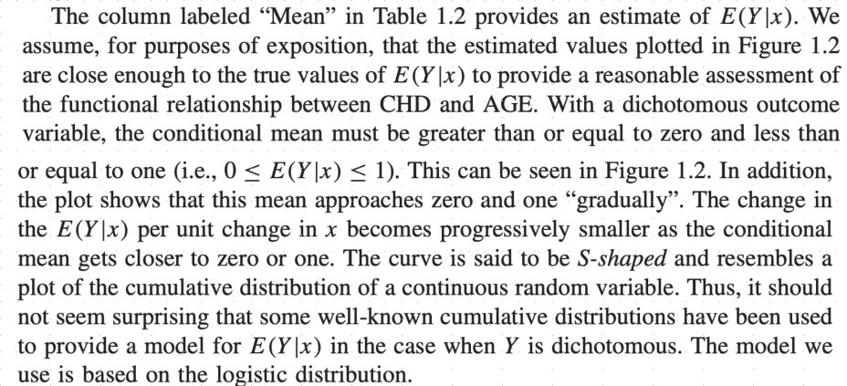
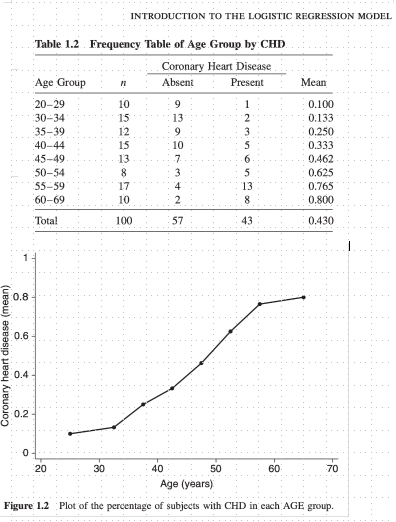
2.37 Farm holding case study
Code
(default_occurrence <-
ggplot(don_desbois %>% mutate(Y = if_else(Y == "1", 1, 0)), aes(x=r17, y=Y)) +
geom_jitter(alpha=0.2, height=0.1) +
geom_smooth(method = "glm",
formula = y ~ x,
method.args = list(family = "binomial"),
se = FALSE,
col = "dodgerblue",
linetype = "dotted") +
geom_segment(data = don_desbois_binned,
aes(x = min, xend = max, y = `Mean(Y)`, yend = `Mean(Y)`),
color = 'coral',
linewidth=1.25)) +
scale_y_continuous(breaks = c(0, 1))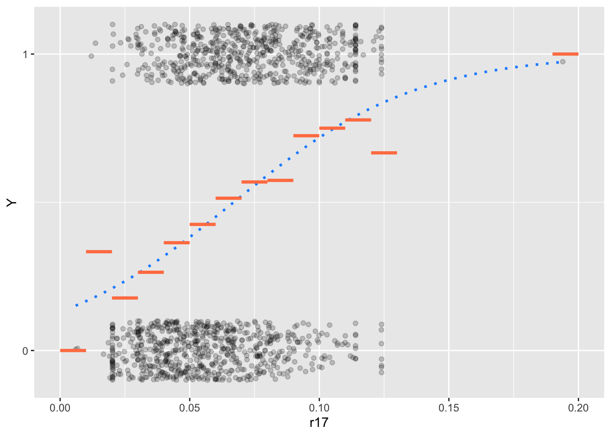
3 Scoring - reminders
3.1 Scoring
3.1.1 Supervised learning - Loss
To achieve that goal we try to find a “best” or optimal classifier (or prediction function in general):
\[ f: \mathrm X \to \mathrm Y \]
We first must define some criterion to assess the classifier performance (what is optimal?).
For that purpose we consider a loss function \(\ell: \mathrm Y \times \mathrm Y \to \mathbb R^+\):
\[ \left\{ \begin{array}{ll} \ell(y,z) > 0 & \mbox{if } y \neq z\cr \ell(y,z) = 0 & \mbox{if } y = z\cr \end{array} \right. \]
\(\ell(y,f(x))\) is the loss or cost of predicting \(f(x)\) while the true output is \(y\).
In the context of binary classification a natural selection for loss is the 0-1 loss:
\[ \ell(y,z)=\mathbf 1_{y \neq z} \]
We will see later in the course that other losses are used.
3.2 Scoring
3.2.1 Supervised learning - Risk
We then define the expected risk of a prediction function \(f\) given the loss \(\ell\) as:
\[ \mathrm R(f) = \mathbb{E}[\ell(Y,f(X))] \] In the context of binary classification \(Y \in \{0,1\}\) and 0-1 loss, we have:
\[ \mathrm R(f) = \mathbb{P}[Y\neq f(X))] \]
Given a data set \((x_i, y_i) \in \mathrm X \times \mathrm Y\), we also define the empirical risk of a classifier \(f\) as:
\[ \hat{\mathrm R}(f) = \frac{1}{n} \sum_i \ell(y_i,f(x_i)) \]
3.3 Scoring
3.3.1 Supervised learning - Bayes classifier
We now define the Bayes(ian) classifier3 \(f^*: \mathrm X \to \mathrm Y\) as a function that achieves the minimal expected risk among all possible functions:
\[ \underset{f}{\operatorname{argmin}}\mathrm R(f) \]
The Bayes classifier depends on \(\ell\) and \(\mathbf P_{\mathrm X \times \mathrm Y}\) which is generally unknown (otherwise the job would be easy).
The Bayes classifier for the 0-1 loss is:
\[ f^*(x)=\left\{ \begin{array}{ll} 1 & \mbox{if } \eta(x)\geq \frac{1}{2}\cr 0 & \mbox{otherwise}\cr \end{array} \right. \]
where:
\[ \eta(x)=\mathbb{P}[Y=1|X=x)] = \mathbb{E}[Y=1|X=x)] \]
\(\eta(x)\) is called the regression function.
3.4 Scoring
3.4.1 Supervised learning - Theory vs practice
In practice \(\mathbf P_{\mathrm X \times \mathrm Y}\) is unknown. What we have is the learning set. The Bayes classifier minimizes the expected risk but is not a function of the learning set. What to do? Conceptually two approaches are used4:
the “probabilistic” approach: we estimate the regression function \(\eta(x)\) and use/plug this estimate “inside” the Bayes classifier (Plugin); within this approach mainly two sub-approaches:
the “discriminative” approach: we directly model or make an assumption on \(\eta(X)=\mathbf P_{\mathrm Y | \mathrm X}\) and estimate it; for example we can make the assumption that \(\eta(x)\) is a function of a particular form.
the “generative” approach: we model the conditional distribution \(\mathbf P_{\mathrm X | \mathrm Y}\) and use Bayes formula to get: \(\eta(X)=\frac{\mathbb{P}[X|Y=1)]\mathbb{P}[Y=1)]}{\mathbb{P}[X]}=\frac{\mathbb{P}[X|Y=1)]\mathbb{P}[Y=1)]}{\mathbb{P}[X|Y=1)]\mathbb{P}[Y=1)]+\mathbb{P}[X|Y=0)]\mathbb{P}[Y=0)]}\)
the optimization or “machine learning” approach: finding \(f\) minimizing the empirical risk; optimization algorithm or heuristics are used to estimate \(f\); the 0-1 loss is not convex so usually it is replaced by a convex surrogate loss or upper bound; usually re-sampling methods are used to compute empirical risk (\(f\) is trained on a training set and empirical risk evaluated on the testing set, \(f\) is chosen to minimize empirical risk).
3.5 Scoring
3.5.1 Scoring function
As introduced in Cornillon et al. (2019, Chapter 11.6 “Prévision - scoring”):
The aim of Scoring: find a Scoring function or Score \(S: \mathbb R^p \to \mathbb R\) that is “high” in case \(\mathbb{P}[Y=1|X=x)\) is “high” and “low” in case \(\mathbb{P}[Y=0|X=x)\) is “high”.
We say that \(S(x)\) is the score of the observation \(x \in \mathbb R^p\).
The notions of Score and classifier are closely linked. Given a Score \(S\) and a cutoff \(s \in \mathbb R\) we obtain the following classifier:
\[ f_s(x)=\left\{ \begin{array}{ll} 1 & \mbox{if } S(x)\geq s\cr 0 & \mbox{otherwise}\cr \end{array} \right. \]
- The values taken by \(S(x)\) are less important than the way they will order a set of observation \(x_1,...x_n\). For any \(\phi: \mathbb R \to \mathbb R\) bijective and increasing function, we say that the scores \(S\) and \(\phi \circ S\) are equivalent.
3.6 Scoring
3.6.1 The regression function, a Scoring function
We defined above, in the context of supervised learning, the regression function \(\eta(x)=\mathbb{P}[Y=1|X=x)]\).
It is a natural candidate for a Scoring function.
The related Bayes classifier uses \(s=\frac{1}{2}\) as cutoff.
As we have just seen in the last sections, \(\eta(x)\) is unknown and we will have to approximate or estimate this regression function using the training set.
4 The Logistic Regression model
4.1 The Logistic Regression model
4.1.1 Informal introductory example
We provide here some intuitions leading to the Logistic Regression model using a simulated data set from James et al. (2021) (the Default data set).
Code
# Default data set (simulated) from ESLII/ISLR
default_data <- ISLR2::Default %>%
as_tibble()
glimpse(default_data)Rows: 10,000
Columns: 4
$ default <fct> No, No, No, No, No, No, No, No, No, No, No, No, No, No, No, No…
$ student <fct> No, Yes, No, No, No, Yes, No, Yes, No, No, Yes, Yes, No, No, N…
$ balance <dbl> 729.5265, 817.1804, 1073.5492, 529.2506, 785.6559, 919.5885, 8…
$ income <dbl> 44361.625, 12106.135, 31767.139, 35704.494, 38463.496, 7491.55…This is a toy data set used for teaching purposes containing information on ten thousand customers.
The aim here is to assess which customers will default on their credit card debt (the target or response variable) based on the current credit card balance and other individual characteristics (the predictors or feature vector).
4.2 The Logistic Regression model
4.2.1 Informal introductory example
We can start to explore the Default data with a scatterplot (Figure 1) of the target variable (default) with respect to a predictor (balance):
Code
ggplot(default_data, aes(x=balance, y=default)) +
geom_point(alpha=0.2)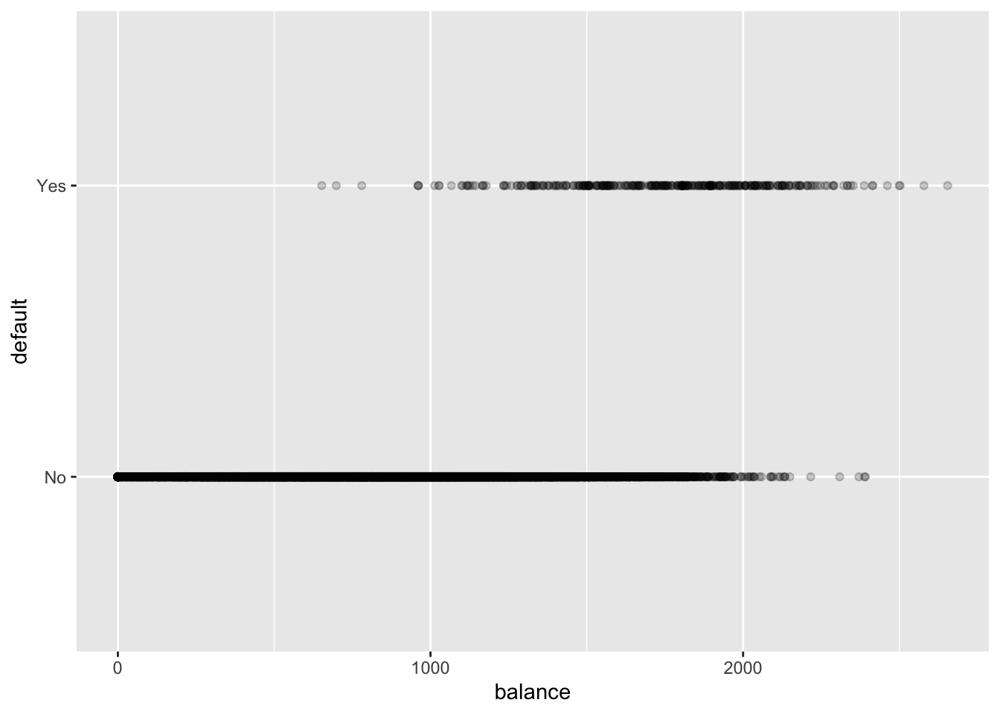
4.3 The Logistic Regression model
4.3.1 Informal introductory example
In this scatterplot, all points fall on one of two parallel lines representing the absence (No) or occurrence (Yes) of default. We “jitter” the data vertically to avoid overplotting. The plot below shows that the response variable is imbalanced towards the absence of default:
Code
ggplot(default_data, aes(x=balance, y=default)) +
geom_jitter(alpha=0.2, height=0.2)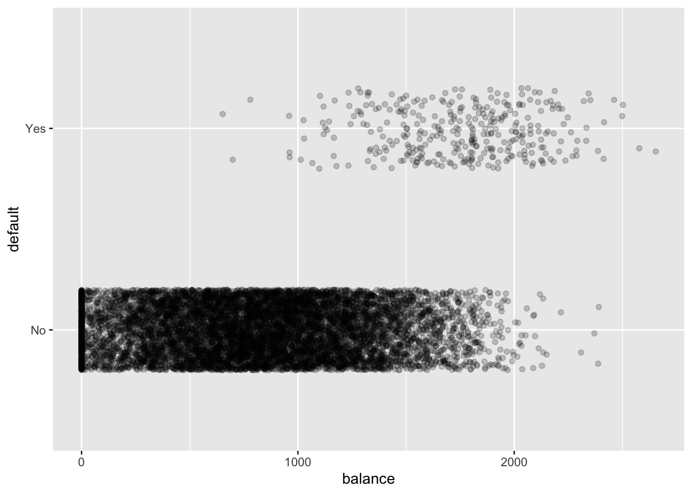
4.4 The Logistic Regression model
4.4.1 Informal introductory example
We also show the boxplots of credit cards balance with respect to default status:
Code
ggplot(default_data,
aes(x=default, y=balance)) +
geom_boxplot()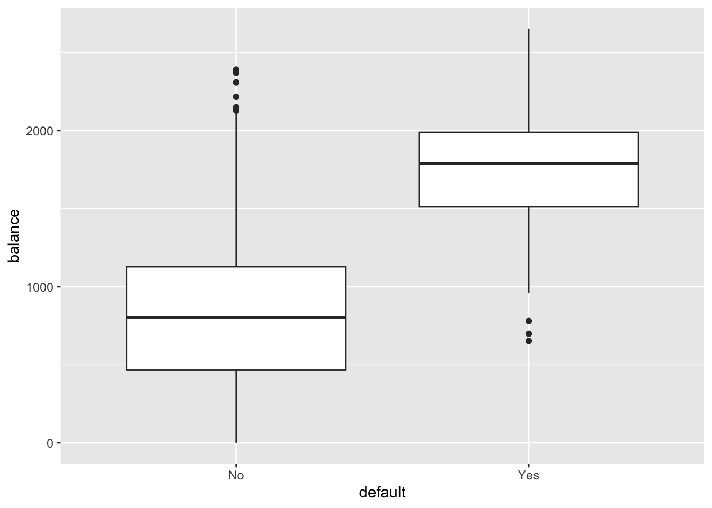
We can see from Figure 1 and Figure 2 that default tends to be more prevalent for accounts with a high balance. However it is difficult to guess a simple relationship between default and balance.
4.5 The Logistic Regression model
4.5.1 Informal introductory example
To investigate further we discretise the balance variables by classes of width \(300\$\) and compute the mean of response variable (default is Yes) within each balance class:
Code
class_width <- 300
(default_data_binned <- default_data %>%
mutate(balance_bins = cut(balance, breaks = seq(0, 3000, class_width),
right = FALSE, dig.lab = 4),
min = floor(balance / class_width) * class_width,
max = if_else(balance == 0 , 1,
# customers with 0$ balance should be long to [0, width) class
# or be excluded
ceiling(balance / class_width)) * class_width) %>%
group_by(balance_bins, min, max, default) %>%
summarize(n=n()) %>%
ungroup() %>%
pivot_wider(names_from = default, values_from = n) %>%
replace_na(list(Yes = 0, No = 0)) %>%
mutate(`Mean(default)` = round(Yes / (Yes + No), 4)))4.6 The Logistic Regression model
4.6.1 Informal introductory example
Then we plot the mean of default (in red) within each balance class (of width \(300\$\)):
Code
(default_occurrence <-
ggplot(default_data %>% mutate(default = if_else(default == "Yes", 1, 0)), aes(x=balance, y=default)) +
geom_point(alpha=0.2) +
geom_segment(data = default_data_binned,
aes(x = min, xend = max, y = `Mean(default)`, yend = `Mean(default)`),
color = 'coral',
linewidth=1.25))
The relationship between the mean occurrence of default and balance is easier to read.
Figure 3 clearly shows that as balance increases, the proportion of customers defaulting on their credit card increases.
4.7 The Logistic Regression model
4.7.1 Informal introductory example
Code
(default_occurrence)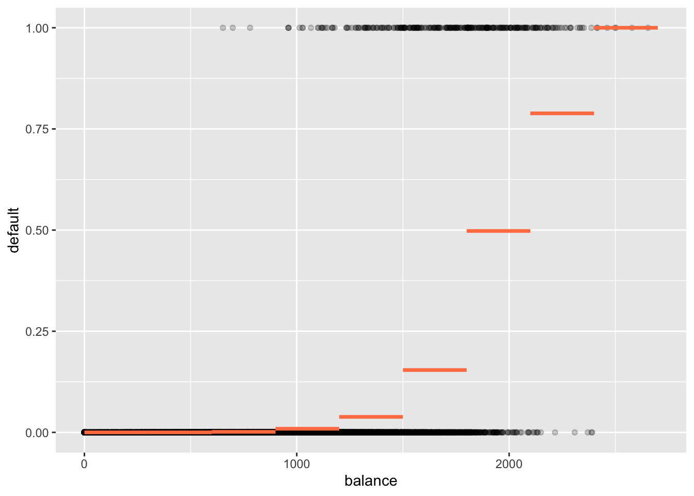
We also notice that the mean default occurrence with respect to balance classes follows a kind of “S”-shaped curve or sigmoid function. Going further and informally, considering that the mean of default occurrence is an estimate of \(\mathbf{E}[Y|X=x]\) for each balance classes an idea would be to model:
\[ \mathbb{E}[Y|X=x] = \mu_\beta(x) \]
where \(\mu_\beta\) is a sigmoid function in \([0,1]\).
4.8 The Logistic Regression model
4.8.1 Informal introductory example
The Logistic Regression model uses the sigmoid function \(\sigma: x \to\sigma(x)=\frac{e^{x}} { 1 + e^{x} }\) also known as the logistic function. Below a simple transform of this logistic function has been “fitted” (blue dots) to the default ~ balance data set:
Code
(default_occurrence +
geom_smooth(method = "glm",
formula = y ~ x,
method.args = list(family = "binomial"),
se = FALSE,
col = "dodgerblue",
linetype = "dotted") +
geom_segment(data = default_data_binned,
aes(x = min, xend = max, y = `Mean(default)`, yend = `Mean(default)`),
color = 'coral',
linewidth=1.25))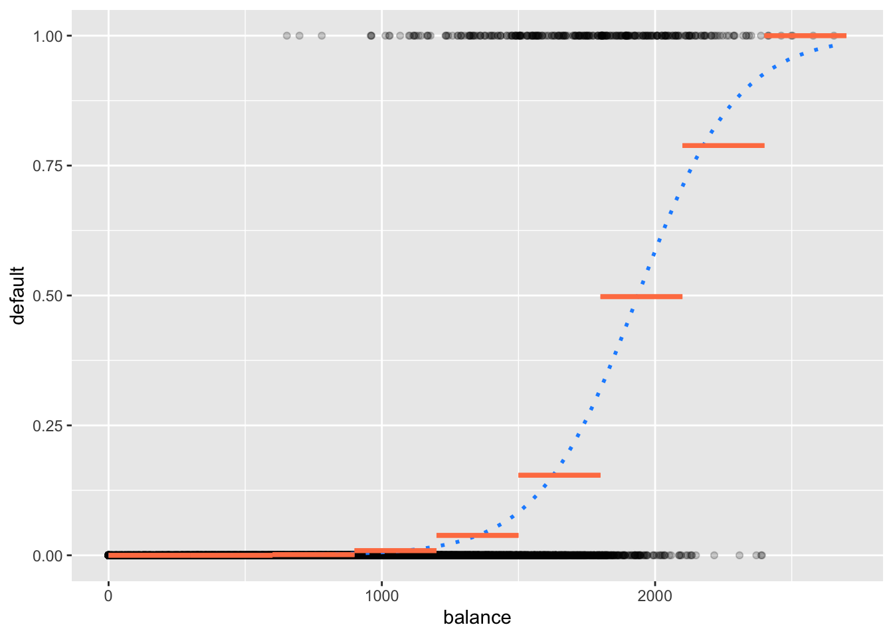
4.9 The Logistic Regression model
4.9.1 A more formal definition - the discriminative approach
Reminding the statistical learning / scoring concepts introduced before. We try to predict the output default (\(Y \in \{0,1\}\)) using a training set of inputs \(X\): this is a binary classification problem.
We remind that to estimate an optimal classifier for output \(Y \in \{0,1\}\) using input \(X = (X_1,\cdots,X_p)\) one approach was to:
model the conditional distribution \(Y|X\) (the discriminative approach),
estimate \(\eta(x)\) with:
\[ \eta(x)=\mathbb{P}[Y=1|X=x)] = \mathbb{E}[Y=1|X=x)] \]
\(\eta(x)\) can be used as a Scoring function
define the classifier \(f_s\) using a cutoff \(s\) and Scoring function \(\eta(x)\) to predict output \(Y\):
\[ f_s(x)=\left\{ \begin{array}{ll} 1 & \mbox{if } \eta(x)\geq s\cr 0 & \mbox{otherwise}\cr \end{array} \right. \]
4.10 The Logistic Regression model
4.10.1 A more formal definition
In the case of Logistic Regression classifier, we model:
\[ Y|X=x~ \sim B(\eta(x)) \]
with
\[ \eta(x)=\sigma(x^T\beta) =\frac{exp(x^T\beta)}{1+exp(x^T\beta)} \]
for some parameter \(\beta=(\beta_1,\cdots,\beta_p)\in \mathbb R^p\), usually \(x_1=1\) and \(\beta_1\) is an intercept. \(\sigma\) is the sigmoid logistic function we have seen before.
In the literature is usual to denote \(\eta(X)=p_{\beta}(X)\) or \(\eta(X)=\pi_{\beta}(X)\).
From now, we will use the notation \(p_{\beta}(X)\).
4.11 The Logistic Regression model
4.11.1 A more formal definition
Defining \(\mathrm{logit}: x \to \log\bigg( \frac{x}{1-x}\bigg)\), which is the inverse of \(\sigma\) the logistic function (show it as an exercise), we have:
\[ \mathrm{logit}(p_{\beta}(X))=X^T\beta \]
4.12 The Logistic Regression model
4.12.1 How to fit with R
The syntax to fit the Logistic model in R using glm() is:
\[ \mathtt{glm(} \mathrm{y} \sim \mathrm{~x,~}\mathtt{data=}~\mathrm{dataframe,~}\mathtt{family~=~binomial(link~=~"logit")} \]
The formula \(\mathrm{y} \sim \mathrm{x}\) depicts the model (i.e. inputs are \(X\), output is \(Y\)) and the data= argument points to the training set contained in a R dataframe (or tibble). This is quite similar to the lm() function.
We also need to specify the distribution for the conditional \(Y\) values (binomial) and the link function (logit) via the family= argument.
4.13 Estimation
4.13.1 How to fit with R
For our default example:
Code
glm_default <- glm(default ~ 1 + student + balance + income,
data = default_data,
family = binomial(link = "logit"))
glm_default <- glm(default ~ .,
data = default_data,
family = "binomial") # by default: link = "logit"The command summary produces result summaries of the fitted model:
Code
summary(glm_default)
Call:
glm(formula = default ~ ., family = "binomial", data = default_data)
Coefficients:
Estimate Std. Error z value Pr(>|z|)
(Intercept) -1.087e+01 4.923e-01 -22.080 < 2e-16 ***
studentYes -6.468e-01 2.363e-01 -2.738 0.00619 **
balance 5.737e-03 2.319e-04 24.738 < 2e-16 ***
income 3.033e-06 8.203e-06 0.370 0.71152
---
Signif. codes: 0 '***' 0.001 '**' 0.01 '*' 0.05 '.' 0.1 ' ' 1
(Dispersion parameter for binomial family taken to be 1)
Null deviance: 2920.6 on 9999 degrees of freedom
Residual deviance: 1571.5 on 9996 degrees of freedom
AIC: 1579.5
Number of Fisher Scoring iterations: 84.14 Estimation
4.14.1 Maximum Likelihood Estimator
We are given \((x_i, y_i) \in \mathbb R^p \times \{0,1\}\), \(i=1,\cdots,n\) where outputs \(y_i\) are independent Bernoulli with parameter \(p_{\beta}(x_i)\) depending on \(x_i\):
\[ \mathrm{logit}(p_{\beta}(x_i))=x_i^T\beta \]
The parameters \(\beta\) of the Logistic Regression model are usually determined using Maximum Likelihood Estimation (MLE). It consists on finding \(\beta\) for which the joint probability of the observed data is greatest.
As \(y_i\) are independent the likelihood function (joint probability) is the product of the probability mass functions:
\[ L(Y,\beta) = \prod_{i=1}^n p_{\beta}(x_i)^{y_i}(1-p_{\beta}(x_i))^{1-y_i} \]
with \(Y=(y_1,\cdots,y_n)\) and \(\beta=(\beta_1,\cdots,\beta_p)\).
4.15 Estimation
4.15.1 Maximum Likelihood Estimator
We seek to maximize the likelihood function over \(\beta\), it is equivalent but easier to maximize the log-likelihood:
\[ \begin{align} \ell(Y,\beta)=\log L(Y,\beta) &=\sum_{i=1}^n \left(y_i \log(p_{\beta}(x_i))+(1-y_i) \log(1- p_{\beta}(x_i))\right) \\ &=\sum_{i=1}^{n} \left(y_i \log(\frac{p_{\beta}(x_i)}{1-p_{\beta}(x_i)})+\log(1- p_{\beta}(x_i))\right)\\ &=\sum_{i=1}^{n} \left(y_i x_i^T\beta -\log(1 + \exp(x_i^T\beta)\right) \end{align} \]
If the MLE \(\hat\beta\) exists, the gradient of log-likelihood satisfies (first order necessary condition):
\[ \nabla\ell(Y,\beta)=\left(\frac{\partial \ell(Y,\beta)}{\partial \beta_1}, \cdots,\frac{\partial \ell(Y,\beta)}{\partial \beta_p}\right)=\mathbf 0 \]
4.16 Estimation
4.16.1 Maximum Likelihood Estimator
We have for \(j=1,\cdots,p\):
\[ \frac{\partial \ell(Y,\beta)}{\partial \beta_j}=\sum_{i=1}^{n} \left(y_i x_{ij} -x_{ij}\frac{\exp(x_i^T\beta)}{1+\exp(x_i^T\beta)}\right)=\sum_{i=1}^{n} x_{ij} \left(y_i- p_{\beta}(x_i)\right) \]
In vector form:
\[ \nabla\ell(Y,\beta)=\sum_{i=1}^{n} x_{i} \left(y_i- p_{\beta}(x_i)\right)=X^T(Y-P_{\beta}) \]
where:
\[ \begin{aligned} X = \begin{pmatrix} x_{11} & \cdots & x_{1p} \\ x_{21} & \cdots & x_{2p} \\ \vdots & \vdots & \vdots \\ x_{n1} & \cdots & x_{np} \end{pmatrix} = \begin{pmatrix} x_1^T\\ x_2^T\\ \vdots \\ x_n^T \end{pmatrix}\in \mathbb{R}^{n\times (p)}, \quad Y = \begin{pmatrix} y_{1} \\ y_{2}\\ \vdots \\ y_{n} \end{pmatrix} \quad and \quad P_{\beta} = \begin{pmatrix} p_{\beta}(x_1) \\ p_{\beta}(x_2)\\ \vdots \\ p_{\beta}(x_n) \end{pmatrix} \end{aligned} \]
4.17 Estimation
4.17.1 Maximum Likelihood Estimator
In the literature \(\nabla\ell(Y,\beta)\) is denoted as the Fisher’s score function \(S(\beta)\).
If the MLE \(\hat\beta\) exists, we have:
\[ S(\hat\beta)=\nabla\ell(Y,\hat\beta)=X^T(Y-P_{\hat\beta})=0 \]
Solving this equation involves solving \(p\) non-linear equations in \(\beta=(\beta_1,\cdots,\beta_p)\):
\[ y_1 x_{1j} + \cdots + y_n x_{nj} = x_{1j}\frac{\exp(x_1^T\beta)}{1+\exp(x_1^T\beta)}+ \cdots + x_{nj}\frac{\exp(x_n^T\beta)}{1+\exp(x_n^T\beta)},\quad j=1,\cdots,p \] Numerical methods are used to solve these non-linear equations as no closed-form solution exist.
4.18 Estimation
4.18.1 MLE existence
If we assume that \(rank(X)=p\), we have that \(S(\beta)\) is concave in \(\beta\) hence if we find a local maximum it is a global maximum.
We have for \((k,l) \in (1,\cdots,p)^2\):
\[ \begin{align} \frac{\partial\mathcal \ell}{\partial\beta_k\partial\beta_l}(\beta)= & \frac{\partial}{\partial\beta_k} \sum_{i=1}^nx_{il}(y_i-\frac{\exp(x_i^T\beta)}{1+\exp(x_i^T\beta)}) \\ =& -\sum_{i=1}^nx_{il}x_{ik}\frac{\exp(x_i^T\beta)}{(1+\exp(x_i^T\beta))^2} \\ =& -\sum_{i=1}^nx_{ik}p_\beta(x_i)(1-p_\beta(x_i))x_{il} \end{align} \]
4.19 Estimation
4.19.1 MLE existence
We obtain that in matrix form:
\[ H(\beta)=\nabla^2\ell(Y,\beta)=-X^T W_\beta X \]
where:
\[ \begin{align} W_\beta = \begin{pmatrix} p_\beta(x_1)(1-p_\beta(x_1)) & \cdots & \cdots\\ \vdots & \ddots & \vdots \\ \cdots & \cdots & p_\beta(x_n)(1-p_\beta(x_n)) \end{pmatrix} \end{align} \]
We have \(p_\beta(x_i)(1-p_\beta(x_i))\geq0\) hence \(W(\beta)\) is semi-definite negative and since \(rank(X)=p\), \(H(\beta)\) is concave.
4.20 Estimation
4.20.1 MLE existence
It is shown in (Albert & Aanderson, 1984) that if additionally there is no complete separation in the training set:
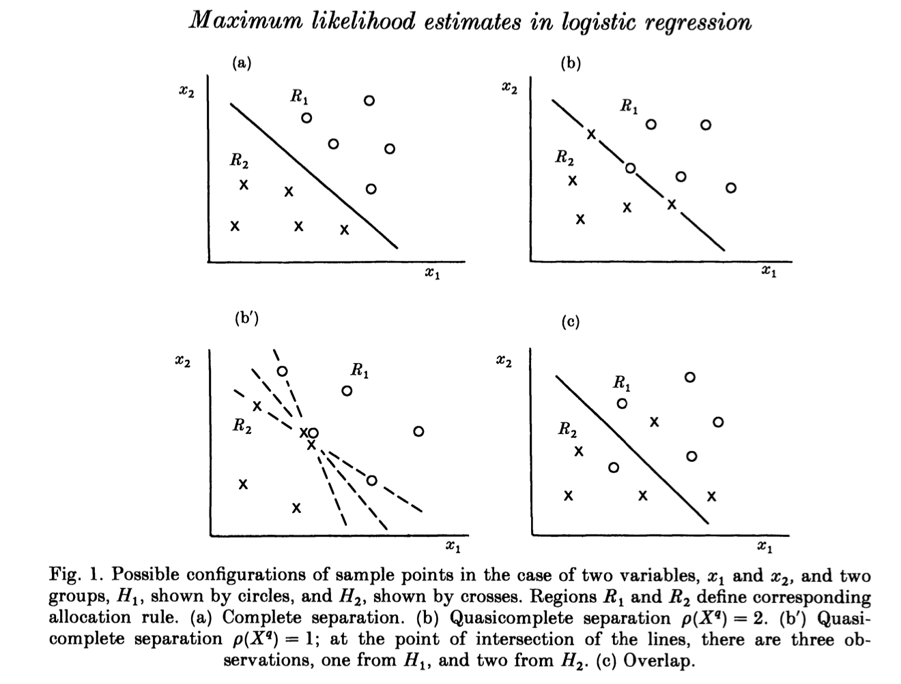
then the MLE exists and is unique, we will denote it \(\hat\beta\).
4.21 Estimation
4.21.1 The Newton-Raphson method
In practice a numerical/iterative method such as the Newton-Raphson method is used to solve the equation:
\[ S(\beta)=\nabla\ell(Y,\beta)=X^T(Y-P_{\beta})=0 \]
Using Taylor expansion of Score \(S(\beta)\) around an initial guess \(\beta^{(0)}\) of \(\hat\beta\): \[ S(\hat\beta) \approx S(\beta^{(0)})+H(\beta^{(0)})(\hat\beta-\beta^{(0)}) \] giving a first estimate of \(\hat\beta\): \[ \beta^{(1)} = \beta^{(0)} - H^{-1}(\beta^{(0)})S(\beta^{(0)}) \] Then until convergence, the Newton-Raphson method iterates:
\[ \beta^{(k+1)} = \beta^{(k)} - H^{-1}(\beta^{(k)})S(\beta^{(k)}) \]
4.22 Estimation
4.22.1 The Newton-Raphson method
We show below a naive implementation of Newton-Raphson method to estimate \(\beta\):
Code
# We put the data frame in matrix form
# also adding an intercept
X <- cbind(rep(1, nrow(default_data)),
as.matrix(default_data %>% select(balance, income)))
colnames(X) <- c("(Intercept)", "balance", "income")
n <- nrow(X)
# We extract the output as vector
Y <- default_data %>% mutate(default = if_else(default=='Yes', 1, 0)) %>% pull(default)
# We set an initial guess for beta and criterion for stopping
beta <- c(0.01, 0.0, 0.0)
nb_iter <- 25
tol <- 1e-4
lr_solve <- function(X, Y, beta, nb_iter, tol){
for(i in 1:nb_iter){
# first compute p_beta(X)
p_beta <- exp(X %*% beta) / (1 + exp(X %*% beta))
# then the Score
Score_beta <- t(X) %*% (Y-p_beta)
# and the Hessian
W_beta <- matrix(0, n, n)
diag(W_beta) <- p_beta*(1-p_beta)
Hessian_beta <- -t(X) %*% W_beta %*% X
# we update beta
new_beta <- beta - solve(Hessian_beta) %*% Score_beta
# we check for convergence
if(t(beta-new_beta) %*% (beta-new_beta) < tol){
return(list(beta = beta, hessian = Hessian_beta, nb_iter = i))
}
beta <- new_beta
}
return(list(beta = beta, hessian = Hessian_beta, nb_iter = i))
}
sol <- lr_solve(X, Y, beta, nb_iter, tol)4.23 Estimation
4.23.1 The Newton-Raphson method
We verify that the R glm() function and our algorithm give close values for coefficients \(\beta\):
- R
glm():
Code
glm_bal_inc <- glm(default ~ balance + income,
data = default_data,
family = "binomial")
print(round(coef(glm_bal_inc ),6))(Intercept) balance income
-11.540468 0.005647 0.000021 - Newton-Raphson:
Code
print(round(t(sol$beta),6)) (Intercept) balance income
[1,] -11.53791 0.005646 2.1e-054.24 Estimation
4.24.1 Machine learning “point of view”
We can rewrite the log-likelihood equation stated before:
\[ \begin{align} \ell(Y,\beta)=\log L(Y,\beta) &=\sum_{i=1}^n \left(y_i \log(p_{\beta}(x_i))+(1-y_i) \log(1- p_{\beta}(x_i))\right) \\ &=-\sum_{i=1}^{n} \ell_{logistic} \left(p_{\beta}(x_i),y_i\right) \\ &= -n\hat{\mathrm R}(p_\beta) \end{align} \]
where \(\ell_{logistic}: \{0,1\}\times \{0,1\} \to \mathbb R^+\):
\[ \ell_{logistic}(y,z) = -y\log(z)-(1-y)\log(1-z)=\left\{ \begin{array}{ll} -\log(z) & \mbox{if } y = 1\cr -\log(1-z) & \mbox{if } y = 0\cr \end{array} \right. \]
and \(\hat{\mathrm{R}}(p_\beta)\) is the empirical risk on the training set.
Estimating \(\beta\) by maximizing the log-likelihood is equivalent to minimizing with respect to \(\beta\) the empirical risk of \(p_\beta\) for the logistic loss.
4.25 References
Footnotes
We won’t describe the procedure here. A SPSS script is given in the article. It is not straightforward to reproduce it with R. I tried scripting manually the procedure and it works but is not very interesting.↩︎
Rdoes not natively provide constant for LDA which won’t affect Scoring function ordering.↩︎It is sometimes designed as oracle in the literature.↩︎
See Sébastien Gadat - TSE - Maths of Deep and Machine Learning course here. Other very good references are Philippe Rigollet - MIT - 18.657: Mathematics of Machine Learning here or Erwan Le Pennec - Polytechnique - Introduction to Machine Learning (M2 MSV) slides here. We will see in another course that in the context of the Logistic Regression the two approaches are strongly linked: it can be seen as a probabilistic|discriminative approach or an optimization approach.↩︎